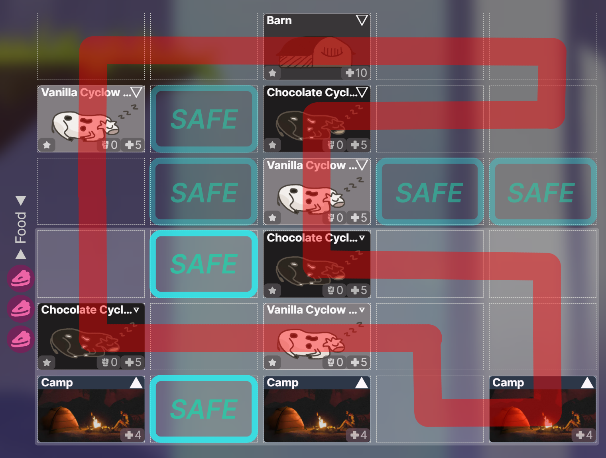
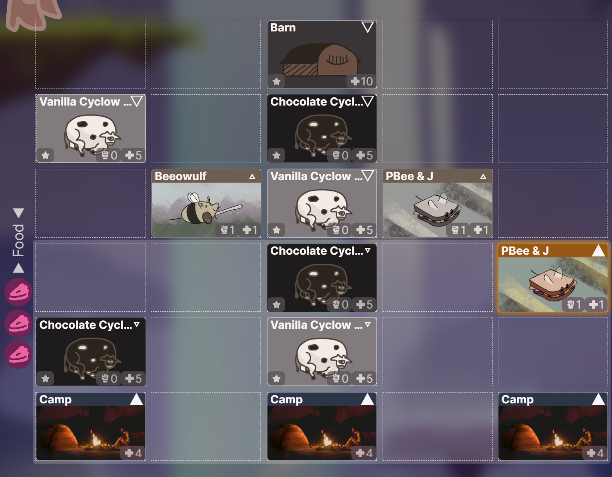
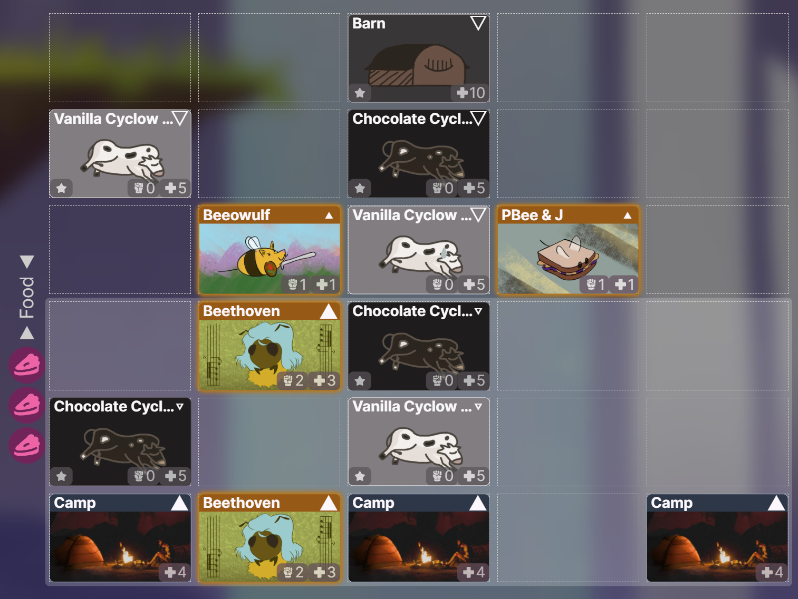

Solution: Miss Yu
Written by Amon Ge
Overview
The only lets us Summon on the first two turns. It’s Invulnerable when there are four or more Cyclows.
The six Cyclows, which are all Invulnerable at the start of the battle, cycle through various phases:
- : On their next turn, they become AWAKE.
- : Every Cyclow opens their eye and curls up into a ball. On their next turn, they use a special “cow-ordinated lasso” attack and become TIRED. Afterwards, one Cyclow becomes WEAK.
- : Nothing special.
- : Unlike other Cyclows, the WEAK Cyclow is vulnerable to Attacks. On the turn after it’s Destroyed, the other TIRED Cyclows Move and return to SLEEPING or ANGRY (if there are only three left).
- : The ANGRY Cyclows are vulnerable, but now have 3 power, and attack each turn.
The Vanilla Cyclows act the same as the Chocolate Cyclows.
Basic strategy involves:
- Turn 1: Summon 2–3 cheap Creatures to Create next turn (eg. , , , )
- Turn 2: Summon 1–2 stronger Creatures (eg. , , )
- Attack the WEAK Cyclow in each cycle using the stronger Creatures until there are only three Cyclows left, then Attack the Barn.
However, the Cyclows’ attack seems to vaporize our Creatures, and we can’t Summon any more after their first attack! The key to this battle is figuring out what Spaces the Cyclows attack.
There are a few clues to this:
- Miss Yu’s name
- Miss Yu describes the attack as a “cow-ordinated lasso”, suggesting the Cyclows are working together to create a loop
- The Cyclows form white or black circles before they attack
The Cyclows are positioning themselves into a Masyu puzzle. There exists a single closed loop through Spaces on the 6×5 battlefield, where s represent white circles (the loop goes straight through and turns in at least one of the Spaces before/after the loop) and s represent black circles (the loop turns, and goes straight in both cells before/after the loop).
The Cyclows attack the Spaces on the loop, vaporizing any friendly Creatures on them. In order to keep our Creatures through multiple cycles, we need them on safe Spaces off the loop (either inside or outside). On the first cycle, we can Summon them to safe Spaces. On subsequent cycles, we have two turns to Move them to safe Spaces.
Example strategy with a Bee deck:
Deck (all cards are befriended from the Tutorial):
- 1×
- 2×
- 2×

After solving the Masyu, there are only two safe Friendly Spaces, but there are safe Enemy Spaces on the third row. We can Summon our cheap Creatures near them to move them next turn and prepare to Summon two s to the safe Friendly Spaces.

We need four Food to Summon two s, so let’s Create with the last PBee & J, sacrificing it. Now Summon the s to the safe Friendly Spaces. After ending turn, the Cyclows’ first attack leaves us with , , and two s for the remainder of the battle.

Once the Cyclows are TIRED/WEAK, we can attack with the s and another Bee to deal 5 damage to the WEAK Cyclow and Destroy it. The other TIRED Cyclows will Move and form a new Masyu puzzle with 5 circles, pushing aside any other cards in their way, and return to SLEEPING.
Now we have two turns to move our Creatures into new safe Spaces, then Attack the WEAK Cyclow, and repeat. Note that we also have free turns during the TIRED/WEAK phase to relocate our Creatures to more central Spaces to anticipate the next attack.
The final ANGRY phase
After surviving the third attack, all four remaining Cyclows are WEAK. After Destroying one, the becomes vulnerable, but the last three Cyclows turn ANGRY! They now each have 3 Power and start Attacking normally, threatening to Destroy our Camps. They never curl back up into balls, suggesting that the Masyu-based attacks are over and we have to play the remainder of the battle regularly.
Normal battle strategy works here, as long as we've kept a decent number of Creatures alive up until this point: Attack one of the Cyclows on the first turn, prioritizing any that are Protecting the . Now we should race to Destroy the with our remaining turns, or if we have enough damage, take down the remaining Cyclows first.
If the final phase proves too difficult, we can update our strategy on future attempts, now we know what to expect. When all four Cyclows are WEAK, we can weaken all of them before Destroying one or even two of them on the same turn. This leaves weaker Cyclows for the ANGRY phase.
Once we Destroy Miss Yu’s , we win the battle as normal and befriend the legendary !
Author’s Notes
I love Masyu. I generated every single 6×5 Masyu (using grilops) and filtered them down to possible solutions where:
- there are between 2–4 safe Spaces on one half of the grid, so it’s not too easy or too hard
- when transitioning to one fewer cow, the remaining cows only have to move up to one Space away
- at least one of the safe Spaces becomes unsafe after the transition
- every safe Space pre-transition has a safe Space at most one Space away post-transition
In the end, I hand-picked 51 configurations that met these conditions. Unfortunately, there are a few unlucky situations where cows and Camps could trap a Creature into a corner, unable to reach a safe Space before the attack. Sorry if this happened to you – one way to avoid this was pre-moving Creatures into the center of the field before Attacking.
Originally, I was hoping I could find configurations where you could destroy any possible cow and the remaining cows have a unique Masyu solution up to one move away, but this seemed too constrained – can you find a possible arrangement?
I imagined Miss Yu as early as the theme proposal for GalactiCardCaptors. Along with other example battles, I wanted to show the flexibility of the card-game format, to not only create original puzzles, but also extend to classic puzzlehunt genres including grid-based logic puzzles. I’m very happy to see this battle in its final form, and I hope you had fun playing it.
Excerpt from the theme proposal:
- Ms. Yu has a 2D play grid and plays white and black circles
- On each turn, the Masyu laser corresponding to her played circles kills all your played cards on the loop
- Ms. Yu moves a few circles around each turn, modifying the laser’s path
- It’s a placement puzzle! Place your cards in safe spots to survive lasers and deal enough damage